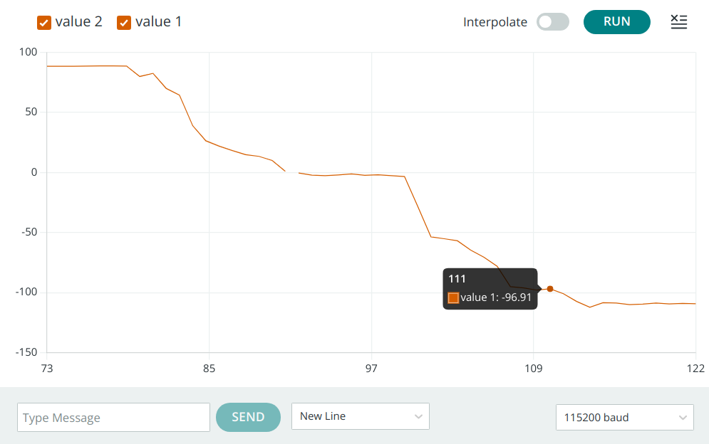
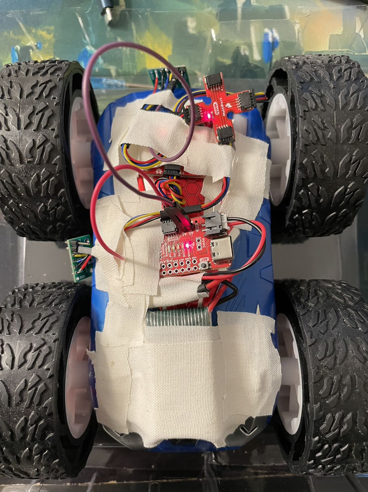

The purpose of this lab is to change from manual to open loop control of the car. The PCB for manual control is cut off and placed with Artemis, the motors are controlled using two motor driver with PWM signals sent from Artemis pins. At the end of this lab, the car is able to execute a pre-programmed series of moves, using the Artemis board and two dual motor drivers.
Prelab
Motor Driver Connection
The diagram below shows how I finally connect the whole systems includig Artemis, two motor drivers, motors and batteries.
It is noticed that the inputs and outputs of each dual motor driver are parallel-coupled, so that we can deliver twice the average current without overheating the chip. The Artemis pins to generate PWM signal to input of motor driver are decided unfortunately by accident after I ruined some of the contiguous pins... But they work as expected eventually.
Battery Discussion
The Artemis and motors are powered using different batteries since Artemis uses much less current while motors consumes a lot. Therefore, the 3.7 V,850 mAh battery with greater energy capacity is used to power the motors, while the 3.7V,650 mAh battery is used to power Artemis.
Lab Tasks
Single Dual Motor Driver
After soldering the inputs and outputs of one motor driver in parallel, I soldered A15 pin from Artemis to connect with BIN2 & AIN2 of the motor driver. I sodered wires on the Ground and Vin pin of the motor driver, so that it can be powered by external power supply using 3.7V voltage (since the battery used to power the motors is 3.7V). Then I write code to generate PWM sigals from A15, send them to motor driver and connect oscilloscope with BOUT2 & AOUT2 pins to verify the output from motor driver.
The video below shows how I connect the components and measure the output signal using oscilloscope.
I used analogWrite to define a PWM signal, where, according to this documentation, the parameter that sets the duty cycle is an 8-bit unsigned integer, i.e.a value in the range 0 ≤ PWM_out_level ≤ 255. I set 100 to pin A15 which represents around 100 / 255 = 39% duty cycle.
Spinning Wheels
After verifying the connection and outputs, I disassemble the car, cut the wires connecting motors with the factory PCB and replace the PCB with Artemis. I solder the wires of one motor to the motor driver and power the motor driver with external power supply to conduct spin experiment.
As the code shows, the wheels should spin in one direction for a second, stop for a second, then spin in the other direction for a second and stop for a second.
The video shows the wheels perform exactly as expected.
After ensuring there is no connection error between Artemis and motor driver, the Ground & Vin wires on motor driver are soldered with the power supply wires on the robot, at the same time, the Ground & Vin pins on the other motor driver are soldered in serial, therefore both motor drivers can powered by the battery now.
The video below shows single motor driver powered by robot battery
Similar to the first motor driver, the input pins of second motor driver is now connected with Artemis side and the output pins are connected with the wires from the other motor. Now two motor drivers control two motors using different PWM signals respectively, while they share the same power supply. The following codes are used to test both motor drivers.
The spinning pattern is just the same as the way single motor does. The video below shows powered by batteries, both sides of wheels spin as the code defines.
After testing both motor drivers are working properly, components from previous labs are all configured within the car as the picture below demonstrates.
all components Lower Limit PWM Values
By conducting several times of experiments, I found that to make my robot start from the rest on the carpet, duty cyle needs to be at least 18%.
While if the robot needs to make a turn, it needs even higher duty cycle up to ...%
video:lower limit PWM turnsIt needs to be noticed that because of the different ground friction and remianing battery energy, the lower limit PWM results can vary a bit.
Straight Line Running
Since both motor drivers are connected in serial with robot battery, ideally their power should be the same, and hence the spinning speed for both motors are the same. While to further test if both motors are actually spinning at the same rate when their duty cycle of PWM input signal are the same, I set PWM duty cycle of both motor drivers to be 35 % to try to examine if the robot can run a straight line. As video shows, basically the robot can run in a straight line with acceptable deviation when distance becomes longer.
While as I increase the duty cycle to try to run the robot with a higher speed, I found the devitation becomes more considerable as video below shows. It is probably because the motors need fidderent time to accelerate to the demanding speed, i.e. the acceleration of two motors are different.
Open Loop Control
In this task, the cables of 3.7 V, 650 mAh battery are soldered with JST connector so that it can be used as power source of Artemis board and sensors connected to the board. While the 3.7 V, 850 mAh battery is used to power up the motors of robot since the motors comsume more energy than the board and sensors.
Eventually, the battery is connected to the Artemis with sensors, and they are mounted on the robot with tape as shown in the figure below.
Additional Tasks
analogWrite Frequency Discussion
According to the PWM measurement by oscilloscope shown below, one horizontal block represents 2.50 ms and a period of PWM occupies about 2.2 blocks which is 5.5 ms. Therefore, on Artemis, the frequency of analogWrite function generates is about 182 Hz.
In lab 3, we have found that the sampling period of ToF sensors are around 20 ms which is much longer than PWM signal period. If the speed of motors are controlled based on data of ToF sensors, current frequency of PWM signal is fast enough to adjust motors' speed to react with obstacles.
While even faster PWM signals can make motors respond to our commands faster by changeing motors' speeds within a shorter time. This can help achieve more difficult stunts with requirement of faster responses and more precise control.
Lowest PWM Value Speed
In this task, the cables of 3.7 V, 650 mAh battery are soldered with JST connector so that it can be used as power source of Artemis board and sensors connected to the board. While the 3.7 V, 850 mAh battery is used to power up the motors of robot since the motors comsume more energy than the board and sensors.
Eventually, the battery is connected to the Artemis with sensors, and they are mounted on the robot with tape as shown in the figure below.
Texts and Videos by Zhongqi Tao